Quantitative strategies on High Frequency Data
Submission of research project – Presentation
Assets from group 1 (S&P500 and Nasdaq futures contracts)
Task outline and data presentation
Shortly about analyzed problem: The dataset consists of high-frequency, 1-minute intraday futures contracts quotations for Nasdaq (referred as NQ later on) and S&P500 (SP) indices, covering the period from January 2023 through June 2025 (7 quarters of in-sample data). Analysis was performed on agregated in-sample data (7 quarters), with proper NA’s filling and filtering techinques.
Description from project task concerning analyzed assets: - SP: futures contract for S&P 500 index (transaction cost = 12\(, point value = 50\)). - NQ: futures contract for NASDAQ index (transaction cost = 12\(, point value = 20\)).
One has also remember about given assumptions for project task, that is developped strategies enforce strict intraday limits by closing all positions at 15:40 and avoiding execution before 9:55 each day, though data from (09:41 - 09:55) period is actively used for signal generation, volatility calibration and other calculation purposes.
After some initial data exploration, one can see that these future contract are positively highly correlated to each other.
NQ and SP closing price correlation:
0.9879000942115326
NQ and SP rate of returns correlation:
0.8982203779015121However, it varies much across the whole agregated sample.

Additionally, strong positive linear relationship can be observed.

Bidirectional Granger causality is also detected in analyzed data, as the p-value of proper statistical tests is below given alpha=5% treshold level.
We check if SP prices Granger-cause NQ prices
Granger Causality
number of lags (no zero) 10
ssr based F test: F=7.4874 , p=0.0000 , df_denom=175381, df_num=10
ssr based chi2 test: chi2=74.8829 , p=0.0000 , df=10
likelihood ratio test: chi2=74.8669 , p=0.0000 , df=10
parameter F test: F=7.4874 , p=0.0000 , df_denom=175381, df_num=10
We check if NQ prices Granger-cause SP prices
Granger Causality
number of lags (no zero) 10
ssr based F test: F=6.4759 , p=0.0000 , df_denom=175381, df_num=10
ssr based chi2 test: chi2=64.7668 , p=0.0000 , df=10
likelihood ratio test: chi2=64.7549 , p=0.0000 , df=10
parameter F test: F=6.4759 , p=0.0000 , df_denom=175381, df_num=10The main conclusion of abovementioned results is that linear regression based filtering techniques may be beneficial for computed strategies - it will be applied for pair trading strategy, developped alongside single moving averages, momentum and mean-reverting two intersecting moving averages and single moving average alongside selected volatility measures (so-called ‘breakout models’)
Approaches undertaken
For this group of assets, author decided to focus on single asset-based strategies (and compare them with pair trading approach), specifically by applying following strategies:
- Simple Moving Average (SMA)
- Two intersecting Simple Moving Averages (2x SMA)
- Two intersecting Exponential Moving Averages (2X EMA)
- Volatility Breakout models, with different parameters approuaches.
Each strategy was checked both with momentum-based and mean-reverting approach and author focused on analysis of Nasdaq futures (NQ) based strategies.
One has also to remember additional assumption- asssuming that we can trade just with one unit of any security or spread, the positions available for each strategy (and implementent properly) are:
- staying flat (0),
- taking short position (-1),
- taking long position (+1).
SMA(20)
For this strategy of 20-minutes Simple Moving Average, both mean-revering and momentum based approach resulted in huge net loss of more than -433,000$ as many changes of signals resulted in incurring major transactional costs.
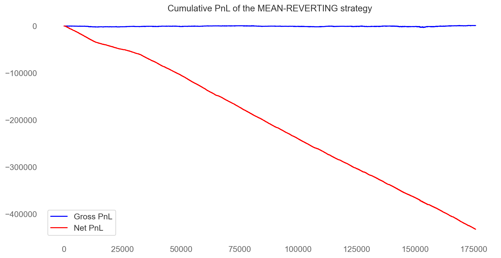
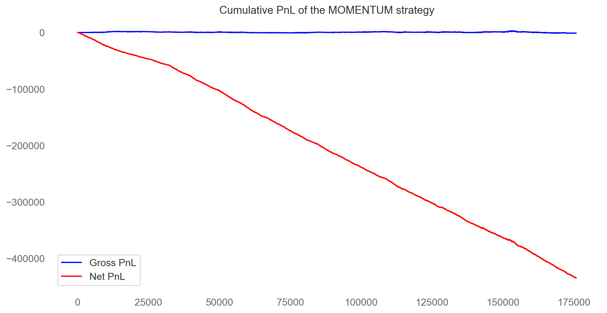
Similar conclusions were drawn for strategy based on intersection of 2 SMAs.

Therefore, additional imporvements and models were added.
2x EMA: EMA60 + EMA30
For this approach, two intersectional exponential moving averages (EMAs) were selcted, with such time horizons that they will cross each other and thus generate proper signals for strategy- several combinations were analyzed, but ‘slower’ EMA60 and ‘faster’ EMA30 perforemd the best.
Still, major loss occurs- it is lower than in previous strategy and also points to potential advantage of momentum-based approach for analyzed problem.

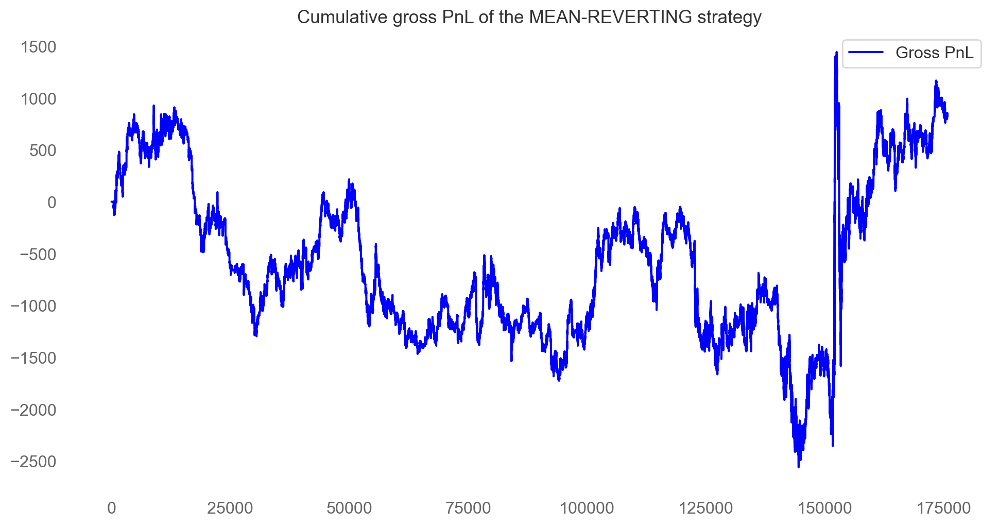
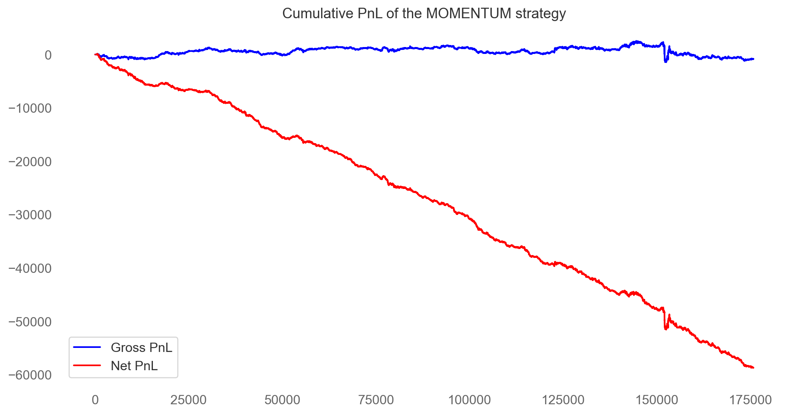

Therefore, additional imporvements and models were added.
Volatility Breakout models
After that, volatility breakout (as a transformation of specific SMAs/EMAs with given variance treshold level) were analyzed. Main addditional parameters of theses models are assumed rolling window for variance (or other volatility metric) calculation indicating treshold level (in this project described ad ‘std_vol’ parameter) and treshold multiplier that indicates the volatility ‘bounds’ (in this project described as ‘m’ parameter)
Firstly, author picked and analyzed a model with such a configuration:
- Approach: Momentum-based strategy
- Base Moving Average: SMA60
- Treshold level: standard deviation with 60-minutes memory (STD60)
- Multiplier: m=3
This model looks promising as it incurred lowest transactional cost level (12,936$) caused by less frequent change of signal sign.
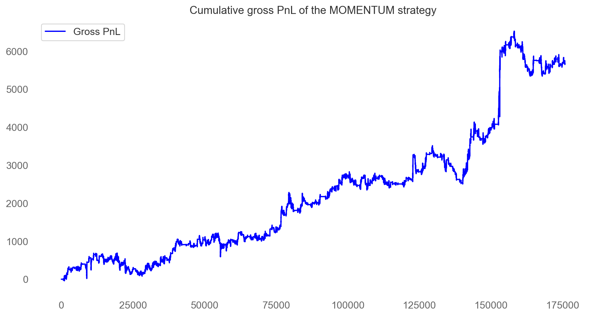
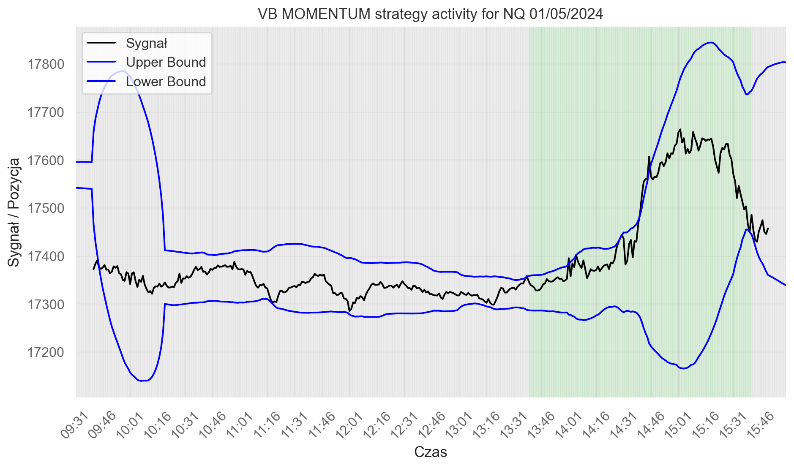
As this configuration is far from optimal, proper adjustments and calibrations of framework were added.

Sharpe Ratio: 0.1014
Calmar Ratio: 0.0083
Sortino Ratio: 0.1495
Omega Ratio: 1.0325For this purpose, various parameter combinations (‘hyperparameters grid’ of model) were tested iteratively in a loop, both for 2 intersecting EMAs and for Volatility Breakout models.
For this purpose, data was splitted into 2 batchs: in-sample training period (that contains data for 2023-2024) and out-of-sample testing period (that contains data for 2024-2025).
Below we present the results of perfomed analysis.
| signalEMA | slowEMA | volat_sd | m | period | gross_SR_mom | net_SR_mom | gross_PnL_mom | net_PnL_mom | gross_SR_mr | net_SR_mr | gross_PnL_mr | net_PnL_mr | av_daily_ntrans | signalEMA_slowEMA | volat_sd_m | |
|---|---|---|---|---|---|---|---|---|---|---|---|---|---|---|---|---|
| 25 | 10 | 120 | 120 | 2 | 2023-2024 | 2.012353 | 1.828681 | 55044.08 | 50028.08 | -2.012353 | -2.195836 | -55044.08 | -60060.08 | 1.290123 | 010_120 | 120_2 |
| 147 | 20 | 60 | 90 | 1 | 2023-2024 | 1.828984 | 1.663058 | 50822.34 | 46238.34 | -1.828984 | -1.994874 | -50822.34 | -55406.34 | 1.179012 | 020_060 | 090_1 |
| 52 | 10 | 200 | 120 | 2 | 2023-2024 | 1.519710 | 1.296177 | 51175.16 | 43711.16 | -1.519710 | -1.743799 | -51175.16 | -58639.16 | 1.919753 | 010_200 | 120_2 |
| 207 | 20 | 300 | 60 | 1 | 2023-2024 | 1.281095 | 0.982590 | 54990.40 | 42414.40 | -1.281095 | -1.582908 | -54990.40 | -67566.40 | 3.234568 | 020_300 | 060_1 |
| 81 | 15 | 90 | 60 | 1 | 2023-2024 | 1.415303 | 1.028515 | 57902.00 | 42350.00 | -1.415303 | -1.807014 | -57902.00 | -73454.00 | 4.000000 | 015_090 | 060_1 |
| 34 | 10 | 150 | 120 | 2 | 2023-2024 | 1.704335 | 1.476219 | 48545.26 | 42089.26 | -1.704335 | -1.932716 | -48545.26 | -55001.26 | 1.660494 | 010_150 | 120_2 |
| 22 | 10 | 120 | 90 | 2 | 2023-2024 | 1.480509 | 1.259104 | 47779.08 | 40699.08 | -1.480509 | -1.702501 | -47779.08 | -54859.08 | 1.820988 | 010_120 | 090_2 |
| 231 | 30 | 90 | 120 | 1 | 2023-2024 | 1.959921 | 1.793708 | 43833.90 | 40089.90 | -1.959921 | -2.125605 | -43833.90 | -47577.90 | 0.962963 | 030_090 | 120_1 |
| 282 | 30 | 300 | 90 | 1 | 2023-2024 | 1.255161 | 0.989408 | 50363.28 | 39851.28 | -1.255161 | -1.522907 | -50363.28 | -60875.28 | 2.703704 | 030_300 | 090_1 |
| 153 | 20 | 90 | 60 | 1 | 2023-2024 | 1.297734 | 0.964195 | 53316.28 | 39828.28 | -1.297734 | -1.634828 | -53316.28 | -66804.28 | 3.469136 | 020_090 | 060_1 |
For training period, volatility breakout model based on intersection of 2 EMAs (‘fast’ EMA10 + ‘slow’ EMA120), with ‘volat_std’=120 and ‘m’=2 parameters and momentum-based approach seems to achieve best result concerning such metrics as net P&L (value of +50,028$) and net Sharpe Ratio (level of 1,829). To validate the results, proper analysis of test set was conducted.
| signalEMA | slowEMA | volat_sd | m | period | gross_SR_mom | net_SR_mom | gross_PnL_mom | net_PnL_mom | gross_SR_mr | net_SR_mr | gross_PnL_mr | net_PnL_mr | av_daily_ntrans | signalEMA_slowEMA | volat_sd_m | |
|---|---|---|---|---|---|---|---|---|---|---|---|---|---|---|---|---|
| 75 | 15 | 60 | 90 | 1 | 2025 | 2.556297 | 2.391585 | 63841.72 | 59833.72 | -2.556297 | -2.721540 | -63841.72 | -67849.72 | 2.609375 | 015_060 | 090_1 |
| 3 | 10 | 60 | 90 | 1 | 2025 | 1.714759 | 1.534066 | 60142.44 | 53926.44 | -1.714759 | -1.896239 | -60142.44 | -66358.44 | 4.046875 | 010_060 | 090_1 |
| 78 | 15 | 60 | 120 | 1 | 2025 | 1.955306 | 1.840801 | 55010.94 | 51818.94 | -1.955306 | -2.069917 | -55010.94 | -58202.94 | 2.078125 | 015_060 | 120_1 |
| 159 | 20 | 90 | 120 | 1 | 2025 | 1.807509 | 1.683198 | 51534.38 | 48030.38 | -1.807509 | -1.932009 | -51534.38 | -55038.38 | 2.281250 | 020_090 | 120_1 |
| 0 | 10 | 60 | 60 | 1 | 2025 | 1.766997 | 1.514506 | 54299.62 | 46667.62 | -1.766997 | -2.020815 | -54299.62 | -61931.62 | 4.968750 | 010_060 | 060_1 |
| 15 | 10 | 90 | 120 | 1 | 2025 | 1.596600 | 1.427139 | 52056.40 | 46632.40 | -1.596600 | -1.766770 | -52056.40 | -57480.40 | 3.531250 | 010_090 | 120_1 |
| 87 | 15 | 90 | 120 | 1 | 2025 | 1.623616 | 1.478711 | 50929.20 | 46465.20 | -1.623616 | -1.769007 | -50929.20 | -55393.20 | 2.906250 | 015_090 | 120_1 |
| 93 | 15 | 120 | 90 | 1 | 2025 | 1.424008 | 1.261928 | 48051.04 | 42675.04 | -1.424008 | -1.586777 | -48051.04 | -53427.04 | 3.500000 | 015_120 | 090_1 |
| 84 | 15 | 90 | 90 | 1 | 2025 | 1.312090 | 1.152588 | 44064.70 | 38784.70 | -1.312090 | -1.472206 | -44064.70 | -49344.70 | 3.437500 | 015_090 | 090_1 |
| 12 | 10 | 90 | 90 | 1 | 2025 | 1.230013 | 1.038662 | 43011.50 | 36411.50 | -1.230013 | -1.422303 | -43011.50 | -49611.50 | 4.296875 | 010_090 | 090_1 |
| 231 | 30 | 90 | 120 | 1 | 2025 | 2.514517 | 2.421501 | 37216.98 | 35800.98 | -2.514517 | -2.607223 | -37216.98 | -38632.98 | 0.921875 | 030_090 | 120_1 |
| 150 | 20 | 60 | 120 | 1 | 2025 | 2.056840 | 1.985746 | 36795.06 | 35499.06 | -2.056840 | -2.127774 | -36795.06 | -38091.06 | 0.843750 | 020_060 | 120_1 |
| 97 | 15 | 120 | 120 | 2 | 2025 | 2.532707 | 2.472637 | 36216.02 | 35304.02 | -2.532707 | -2.592503 | -36216.02 | -37128.02 | 0.593750 | 015_120 | 120_2 |
| 106 | 15 | 150 | 120 | 2 | 2025 | 2.337198 | 2.236598 | 36667.72 | 35059.72 | -2.337198 | -2.437537 | -36667.72 | -38275.72 | 1.046875 | 015_150 | 120_2 |
| 21 | 10 | 120 | 90 | 1 | 2025 | 1.184355 | 1.003127 | 41048.14 | 34856.14 | -1.184355 | -1.366491 | -41048.14 | -47240.14 | 4.031250 | 010_120 | 090_1 |
| 6 | 10 | 60 | 120 | 1 | 2025 | 1.289485 | 1.114385 | 38339.34 | 33203.34 | -1.289485 | -1.465302 | -38339.34 | -43475.34 | 3.343750 | 010_060 | 120_1 |
| 16 | 10 | 90 | 120 | 2 | 2025 | 1.850523 | 1.800981 | 31197.06 | 30333.06 | -1.850523 | -1.899921 | -31197.06 | -32061.06 | 0.562500 | 010_090 | 120_2 |
| 25 | 10 | 120 | 120 | 2 | 2025 | 1.650823 | 1.553279 | 31131.22 | 29283.22 | -1.650823 | -1.748264 | -31131.22 | -32979.22 | 1.203125 | 010_120 | 120_2 |
| 234 | 30 | 120 | 60 | 1 | 2025 | 1.086886 | 0.938610 | 33641.92 | 29105.92 | -1.086886 | -1.235695 | -33641.92 | -38177.92 | 2.953125 | 030_120 | 060_1 |
| 13 | 10 | 90 | 90 | 2 | 2025 | 1.800711 | 1.716930 | 29522.90 | 28130.90 | -1.800711 | -1.884311 | -29522.90 | -30914.90 | 0.906250 | 010_090 | 090_2 |
In this case, different hyperparameters for momentum-based strategy achieve best net P&L value (at +59,833$ level), however previously selected in training period models seems to also perform well (15th place concerning net P&L level with +34,856$ while sustaining high net Sharpe Ratio value).
As we can see from results below, momentum-based strategies perform better than the mean-reverting ones within analyzed framework, both concerning best training and (especially) testing models, with net profits at +26,832$ and -102,391$ (!) respectively.
| signalEMA | slowEMA | volat_sd | m | period | gross_SR_mom | net_SR_mom | gross_PnL_mom | net_PnL_mom | gross_SR_mr | net_SR_mr | gross_PnL_mr | net_PnL_mr | av_daily_ntrans | signalEMA_slowEMA | volat_sd_m | |
|---|---|---|---|---|---|---|---|---|---|---|---|---|---|---|---|---|
| 504 | 90 | 60 | 60 | 1 | 2023-2024 | -1.268553 | -1.461137 | -31632.00 | -36432.00 | 1.268553 | 1.075822 | 31632.00 | 26832.00 | 1.234568 | 090_060 | 060_1 |
| 318 | 45 | 150 | 90 | 1 | 2023-2024 | -0.563220 | -0.808853 | -20717.94 | -29861.94 | 0.563220 | 0.315779 | 20717.94 | 11573.94 | 2.351852 | 045_150 | 090_1 |
| 434 | 75 | 60 | 60 | 3 | 2023-2024 | -0.897195 | -1.037670 | -12633.88 | -14625.88 | 0.897195 | 0.756154 | 12633.88 | 10641.88 | 0.512346 | 075_060 | 060_3 |
| 433 | 75 | 60 | 60 | 2 | 2023-2024 | -0.866767 | -1.010897 | -12213.66 | -14253.66 | 0.866767 | 0.722160 | 12213.66 | 10173.66 | 0.524691 | 075_060 | 060_2 |
| 438 | 75 | 60 | 120 | 1 | 2023-2024 | -1.183850 | -1.269630 | -10335.00 | -11127.00 | 1.183850 | 1.097103 | 10335.00 | 9543.00 | 0.203704 | 075_060 | 120_1 |
| 511 | 90 | 60 | 120 | 2 | 2023-2024 | -1.183850 | -1.269630 | -10335.00 | -11127.00 | 1.183850 | 1.097103 | 10335.00 | 9543.00 | 0.203704 | 090_060 | 120_2 |
| 510 | 90 | 60 | 120 | 1 | 2023-2024 | -1.183850 | -1.272380 | -10335.00 | -11151.00 | 1.183850 | 1.094326 | 10335.00 | 9519.00 | 0.209877 | 090_060 | 120_1 |
| 512 | 90 | 60 | 120 | 3 | 2023-2024 | -1.170149 | -1.256185 | -10197.56 | -10989.56 | 1.170149 | 1.083152 | 10197.56 | 9405.56 | 0.203704 | 090_060 | 120_3 |
| 437 | 75 | 60 | 90 | 3 | 2023-2024 | -1.175061 | -1.268719 | -10246.36 | -11110.36 | 1.175061 | 1.080263 | 10246.36 | 9382.36 | 0.222222 | 075_060 | 090_3 |
| 435 | 75 | 60 | 90 | 1 | 2023-2024 | -1.175061 | -1.268719 | -10246.36 | -11110.36 | 1.175061 | 1.080263 | 10246.36 | 9382.36 | 0.222222 | 075_060 | 090_1 |
| signalEMA | slowEMA | volat_sd | m | period | gross_SR_mom | net_SR_mom | gross_PnL_mom | net_PnL_mom | gross_SR_mr | net_SR_mr | gross_PnL_mr | net_PnL_mr | av_daily_ntrans | signalEMA_slowEMA | volat_sd_m | |
|---|---|---|---|---|---|---|---|---|---|---|---|---|---|---|---|---|
| 558 | 90 | 240 | 60 | 1 | 2025 | -3.028774 | -3.145933 | -98383.88 | -102391.88 | 3.028774 | 2.911132 | 98383.88 | 94375.88 | 2.609375 | 090_240 | 060_1 |
| 570 | 90 | 300 | 90 | 1 | 2025 | -2.965781 | -3.078631 | -93438.36 | -97134.36 | 2.965781 | 2.852589 | 93438.36 | 89742.36 | 2.406250 | 090_300 | 090_1 |
| 426 | 60 | 300 | 90 | 1 | 2025 | -2.828114 | -2.940465 | -93304.50 | -97192.50 | 2.828114 | 2.715331 | 93304.50 | 89416.50 | 2.531250 | 060_300 | 090_1 |
| 486 | 75 | 240 | 60 | 1 | 2025 | -2.659679 | -2.775799 | -90705.44 | -94857.44 | 2.659679 | 2.543072 | 90705.44 | 86553.44 | 2.703125 | 075_240 | 060_1 |
| 352 | 45 | 300 | 60 | 2 | 2025 | -2.630727 | -2.738901 | -85869.16 | -89541.16 | 2.630727 | 2.522197 | 85869.16 | 82197.16 | 2.390625 | 045_300 | 060_2 |
| 280 | 30 | 300 | 60 | 2 | 2025 | -2.453023 | -2.561377 | -81753.36 | -85497.36 | 2.453023 | 2.344319 | 81753.36 | 78009.36 | 2.437500 | 030_300 | 060_2 |
| 208 | 20 | 300 | 60 | 2 | 2025 | -2.372184 | -2.482116 | -80120.34 | -83960.34 | 2.372184 | 2.261907 | 80120.34 | 76280.34 | 2.500000 | 020_300 | 060_2 |
| 495 | 75 | 300 | 60 | 1 | 2025 | -2.342380 | -2.456621 | -80322.58 | -84402.58 | 2.342380 | 2.227685 | 80322.58 | 76242.58 | 2.656250 | 075_300 | 060_1 |
| 568 | 90 | 300 | 60 | 2 | 2025 | -2.544159 | -2.644552 | -78411.74 | -81603.74 | 2.544159 | 2.443511 | 78411.74 | 75219.74 | 2.078125 | 090_300 | 060_2 |
| 567 | 90 | 300 | 60 | 1 | 2025 | -2.488162 | -2.609492 | -79073.96 | -83105.96 | 2.488162 | 2.366302 | 79073.96 | 75041.96 | 2.625000 | 090_300 | 060_1 |
| 345 | 45 | 240 | 90 | 1 | 2025 | -3.013976 | -3.160166 | -79047.66 | -83079.66 | 3.013976 | 2.867064 | 79047.66 | 75015.66 | 2.625000 | 045_240 | 090_1 |
| 498 | 75 | 300 | 90 | 1 | 2025 | -2.669035 | -2.794202 | -77474.12 | -81242.12 | 2.669035 | 2.543438 | 77474.12 | 73706.12 | 2.453125 | 075_300 | 090_1 |
| 354 | 45 | 300 | 90 | 1 | 2025 | -2.674246 | -2.808143 | -76032.82 | -80016.82 | 2.674246 | 2.539738 | 76032.82 | 72048.82 | 2.593750 | 045_300 | 090_1 |
| 561 | 90 | 240 | 90 | 1 | 2025 | -2.650255 | -2.779796 | -70721.58 | -74321.58 | 2.650255 | 2.520194 | 70721.58 | 67121.58 | 2.343750 | 090_240 | 090_1 |
| 423 | 60 | 300 | 60 | 1 | 2025 | -2.237207 | -2.363755 | -71261.12 | -75461.12 | 2.237207 | 2.110075 | 71261.12 | 67061.12 | 2.734375 | 060_300 | 060_1 |
| 136 | 15 | 300 | 60 | 2 | 2025 | -2.294349 | -2.422291 | -68564.56 | -72548.56 | 2.294349 | 2.165826 | 68564.56 | 64580.56 | 2.593750 | 015_300 | 060_2 |
| 569 | 90 | 300 | 60 | 3 | 2025 | -2.308160 | -2.399189 | -66559.86 | -69223.86 | 2.308160 | 2.217012 | 66559.86 | 63895.86 | 1.734375 | 090_300 | 060_3 |
| 416 | 60 | 240 | 60 | 3 | 2025 | -2.322483 | -2.415665 | -66386.98 | -69098.98 | 2.322483 | 2.229150 | 66386.98 | 63674.98 | 1.765625 | 060_240 | 060_3 |
| 64 | 10 | 300 | 60 | 2 | 2025 | -1.889491 | -2.003600 | -67481.14 | -71681.14 | 1.889491 | 1.774973 | 67481.14 | 63281.14 | 2.734375 | 010_300 | 060_2 |
| 550 | 90 | 200 | 60 | 2 | 2025 | -2.306521 | -2.398716 | -65947.22 | -68635.22 | 2.306521 | 2.214164 | 65947.22 | 63259.22 | 1.750000 | 090_200 | 060_2 |
To ascertain whether obtained results are good enough, comparison to pair-trading strategy will be conducted below.
Pair-trading strategy
For this segment, spread between NQ-SP quotations was calculated and 2 separate strategies were conducted (on ‘simple’ spread value and the volatility breakout model that accounts for certain standard deviation of spread oscillation).
As one can observe not favourable results in terms of net Sharpe Ratio (plot depics the value of models with different combinations, using previously developped grid search mechanism), we will focus more on author’s improvements in terms of regression filtering.

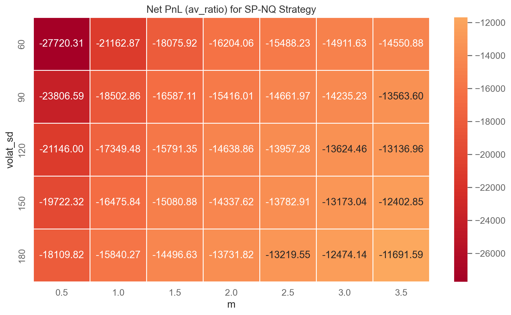
As stated at the data analysis section, additional filtering based on linear regression could be beneficial for such strategies- it is also confirmed by positive correlation between pair of analyzed assets.
OLS Regression Results
==============================================================================
Dep. Variable: SP R-squared: 0.976
Model: OLS Adj. R-squared: 0.976
Method: Least Squares F-statistic: 6.735e+06
Date: Sun, 18 Jan 2026 Prob (F-statistic): 0.00
Time: 22:21:04 Log-Likelihood: -1.0248e+06
No. Observations: 165985 AIC: 2.050e+06
Df Residuals: 165983 BIC: 2.050e+06
Df Model: 1
Covariance Type: nonrobust
==============================================================================
coef std err t P>|t| [0.025 0.975]
------------------------------------------------------------------------------
const 1097.7632 1.570 699.191 0.000 1094.686 1100.840
NQ 0.2269 8.74e-05 2595.192 0.000 0.227 0.227
==============================================================================
Omnibus: 6474.144 Durbin-Watson: 0.000
Prob(Omnibus): 0.000 Jarque-Bera (JB): 4993.037
Skew: 0.337 Prob(JB): 0.00
Kurtosis: 2.483 Cond. No. 9.89e+04
==============================================================================
Notes:
[1] Standard Errors assume that the covariance matrix of the errors is correctly specified.
[2] The condition number is large, 9.89e+04. This might indicate that there are
strong multicollinearity or other numerical problems.Although proper filtering techniques based on linear regression greatly improve model performance regarding net SR (-0.75) and net P&L (-48$), these results are much worse than these obtained for Volatility Breakout model that trades only on single Nasdaq futures asset.
| filter | gross_SR | net_SR | gross_PnL | net_PnL | avg_n_trades_per_day | |
|---|---|---|---|---|---|---|
| 9 | filter_regression_price_beta_sig_above05 | -0.749164 | -0.749164 | -17.250825 | -48.831249 | 0.004444 |
| 8 | filter_regression_price_beta_sig_above025 | 0.991007 | -6.901138 | 187.681475 | -2492.308367 | 0.382222 |
| 3 | filter_correlation_prices_09 | 0.657514 | -21.065465 | 171.019949 | -9821.900839 | 1.433333 |
| 2 | filter_correlation_prices_08 | 0.865645 | -26.504891 | 258.709084 | -11528.704853 | 1.691111 |
| 6 | filter_correlation_returns_08 | 0.688223 | -28.076650 | 189.934557 | -11653.134860 | 1.700000 |
| 12 | filter_regression_return_beta_sig_above05 | 0.560998 | -28.910420 | 153.243696 | -11881.572850 | 1.726667 |
| 1 | filter_correlation_prices_07 | 0.805824 | -29.465902 | 248.408697 | -12191.380083 | 1.784444 |
| 5 | filter_correlation_returns_07 | 0.662841 | -30.195762 | 185.535915 | -12092.006912 | 1.762222 |
| 0 | filter_correlation_prices_06 | 0.598289 | -31.512183 | 188.861197 | -12624.884330 | 1.837778 |
| 11 | filter_regression_return_beta_sig_above025 | 0.936207 | -31.633913 | 284.468710 | -12462.031658 | 1.828889 |
| 4 | filter_correlation_returns_06 | 0.568552 | -31.805449 | 162.300093 | -12427.511840 | 1.806667 |
| 10 | filter_regression_return_beta_sig_above0 | 0.861445 | -34.383616 | 269.689331 | -12914.991620 | 1.891111 |
| 7 | filter_regression_price_beta_sig_above0 | 0.976313 | -35.274254 | 356.460689 | -13316.180362 | 1.960000 |
Finally selected strategy for group 1
Finally, after comparison of different models and ‘hyperparameters’ by manual grid search mechanizm, by evaluation of performance on training and testing set and by comparison to pair-trading NQ-SP strategy, the author considers below strategy as best performing:
Strategy: Volatility Breakout model
Parameters of the best model
- Asset: Nasdaq futures (single-asset based strategy)
- Type: momentum-based strategy
- Baseline: 2 intersecting EMAs (fast EMA10 + slow EMA120)
- volat_std: 120
- m: 2
Below, author presents final results and metrics achieved by application of this strategy to full in-sample data.
Summary of results for group 1
| quarter | gross_SR_NQ | net_SR_NQ | gross_PnL_NQ | net_PnL_NQ | gross_CR_NQ | net_CR_NQ | av_daily_ntrans_NQ | stat_NQ | gross_SR_SP | net_SR_SP | gross_PnL_SP | net_PnL_SP | gross_CR_SP | net_CR_SP | av_daily_ntrans_SP | stat_SP |
|---|---|---|---|---|---|---|---|---|---|---|---|---|---|---|---|---|
| 2023_Q1 | 2.77 | 2.26 | 9093.80 | 7437.80 | 0.17 | 0.14 | 2.12 | 3.53 | 0.99 | 0.01 | 5288.90 | 32.90 | 0.06 | 0.00 | 6.74 | -0.00 |
| 2023_Q3 | 2.33 | 1.61 | 4709.56 | 3269.56 | 0.15 | 0.10 | 1.85 | 1.32 | -0.25 | -1.82 | -793.40 | -5953.40 | -0.02 | -0.11 | 6.62 | -4.13 |
| 2023_Q4 | 2.69 | 2.17 | 5145.68 | 4137.68 | 0.17 | 0.14 | 1.31 | 2.37 | 2.72 | 1.26 | 8944.45 | 4240.45 | 0.17 | 0.08 | 6.12 | 1.10 |
| 2024_Q2 | 1.78 | 0.92 | 2652.44 | 1356.44 | 0.11 | 0.06 | 1.66 | 0.13 | 1.45 | 0.28 | 6159.75 | 1215.75 | 0.09 | 0.02 | 6.34 | -0.04 |
| 2024_Q4 | -1.16 | -1.99 | -1891.20 | -3283.20 | -0.07 | -0.12 | 1.78 | -2.96 | 0.77 | -0.35 | 3450.65 | -1613.35 | 0.05 | -0.02 | 6.49 | -0.41 |
| 2025_Q1 | 1.80 | 1.45 | 5900.68 | 4748.68 | 0.11 | 0.09 | 1.52 | 1.48 | -0.11 | -1.16 | -490.05 | -5434.05 | -0.01 | -0.07 | 6.54 | -2.82 |
| 2025_Q2 | 3.33 | 3.04 | 14757.04 | 13413.04 | 0.21 | 0.19 | 1.72 | 6.58 | 0.25 | -0.20 | 2755.55 | -2164.45 | 0.02 | -0.01 | 6.31 | -0.54 |
This table also shows the results of best-performing Volatility breakout model for S&P500 futures (with different hyperparameters and configuration, selected by applying same procedure) but it performs much worse- we’ll omit the explanation of these results and focus on ‘Nasdaq-based’ strategy.
From early 2023 through mid-2025, the net Sharpe ratio of the strategy remains mostly above 1.5 and frequently exceeds 2.0, indicating a high return per unit of risk. In particular, the first quarter of 2023 and the fourth quarter of 2023 show net Sharpe ratios above 2, confirming that the profitability observed in these periods is statistically meaningful rather than the result of random fluctuations.
Transaction costs reduce performance, as expected, but they do not undermine the economic viability of the strategy. The gap between gross and net Sharpe ratios is moderate and stable across quarters, suggesting that the trading frequency is well-controlled. On average, the strategy executes between one and two trades per day, which is low enough to remain robust to realistic transaction costs while still actively exploiting intraday price movements.
Net profit figures reinforce the Sharpe ratio results. The strategy produces positive net PnL in six out of seven quarters, with particularly strong profitability in 2023_Q1, 2023_Q4, 2025_Q1, and especially 2025_Q2. Even in weaker periods such as 2024_Q2, the strategy remains marginally profitable, indicating reduced opportunity rather than structural failure.
Overall, the NASDAQ volatility breakout strategy exhibits robust and economically meaningful performance across multiple years, with high risk-adjusted returns, stable trading intensity, and strong profitability after transaction costs. Its primary weakness lies in its sensitivity to specific market regimes, particularly those unfavorable to momentum-based trading. Nevertheless, given its strong average performance and clear identification of failure regimes, the strategy provides a solid foundation for further refinement and risk-control enhancements, such as volatility filters or introduction of stop-loss mechanism.
Equity line for group 1 – 2023Q1

Key observations regarding performance (Strong Gain): net_PnL started flat, followed by a major “V-shaped” recovery in March. Finished with a Net PnL of ~$7,500.
Equity line for group 1 – 2023Q3

Key observations regarding performance (Moderate Gain): High volatility in July followed by a long plateau in August. Ended the quarter positively with a Net PnL of ~$3,300.
Equity line for group 1 – 2023Q4

Key observations regarding performance (Strong Late Surge): The strategy was largely breakeven for the first two months. A massive “parabolic” move in mid-December drove Net_PnL to ~$4,100 level
Equity line for group 1 – 2024Q2

Key observations regarding performance (Moderate Growth with Drawdown): The strategy showed steady growth through April and May, peaking at nearly $4,000 Net_PnL. However, warning signal in form of significant sharp drawdown occurred in late June, wiping out about 50% of the quarter’s gains, ending around $1,400 Net_PnL.
Equity line for group 1 – 2024Q4

Key observations regarding performance (Significant Loss): This was the worst-performing period in the set- after a brief positive start in early October, the strategy entered a sustained downward trend. Final Result: Finished deep ‘in the red’ with a Net_PnL of approx -$3,200.
Equity line for group 1 – 2025Q1
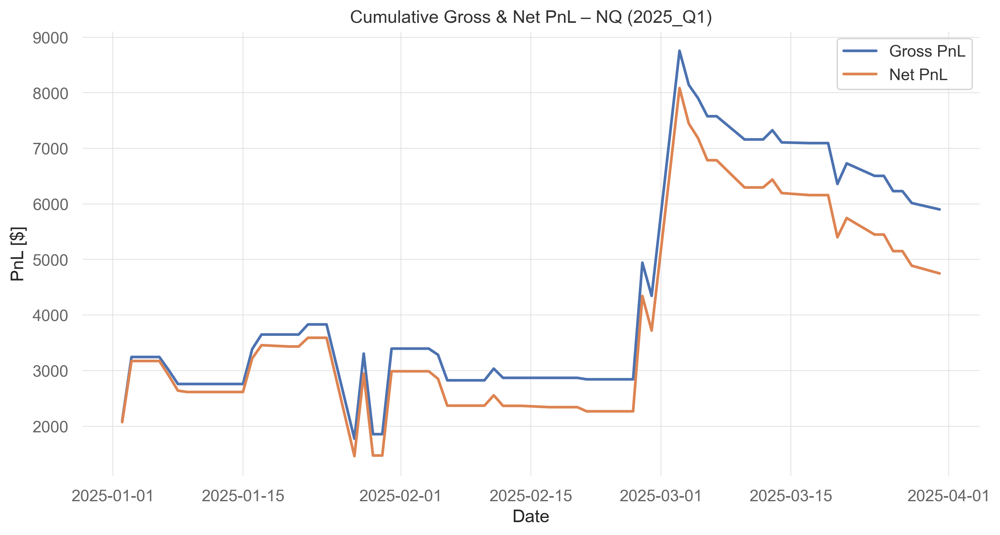
Key observations regarding performance (‘High Risk, High Reward’): This quarter was characterized by massive swings. A major dip in February saw Net_PnL drop to $1,500 before a massive surge in March. Final Result: Despite a late March pullback, it ended strongly at approx $4,800 Net_PnL level
Equity line for group 1 – 2025Q2

Key observations regarding performance (Exceptional Growth) This is the “star” performer of the dataset. A massive jump in mid-April set a new baseline. The strategy showed excellent “step-stair” growth, meaning it would surge and then hold its gains (consolidate) rather than giving them back. Final Result: Ended at an all-time high for these charts, near $13,400 Net.
Assets from group 2 (Currency and commodities futures contracts)
Approaches undertaken
The dataset for Group 2 consists of high-frequency, 5-minute intraday quotations for FX and precious metals futures:
- CAD – futures contract for Canadian dollar (transaction cost = 10\(, point value = 100,000\))
- AUD – futures contract for Australian dollar (transaction cost = 10\(, point value = 100,000\))
- XAU – futures contract for gold (transaction cost = 15\(, point value = 100\))
- XAG – futures contract for silver (transaction cost = 10\(, point value = 5,000\))
Covering the period from January 2023 through June 2025 (7 quarters of in-sample data).
All strategies are implemented under the following intraday assumptions:
- Positions are closed 10 minutes before session end
- No trades are executed during the first few minutes of the session
- Early periods are still used for signal generation, volatility calibration, and indicator calculation
- Positions for each strategy are restricted to:
- Flat (0) – no exposure
- Long (+1) – buy one unit
- Short (-1) – sell one unit
- Flat (0) – no exposure
Before selecting the final trading strategy for Group 2 assets, several candidate approaches were tested:
- Single-asset strategies – applied individually to CAD, AUD, XAU, XAG
- Pairs trading strategies – long-short combinations between two assets
- Portfolio-based strategies – signals aggregated across the group
For each candidate strategy, multiple entry/exit techniques and assumptions were considered:
- Momentum-based vs mean-reversion approaches
- Simple Moving Average (SMA) and Exponential Moving Average (EMA) crossovers
- Volatility breakout models with different memory lengths
- Minimum holding periods, trend filters, and volatility scaling
- Intraday trading constraints (flat before 9:55, exit before breaks, etc.)
A systematic grid search was carried out for all candidate strategies across all assets in Group 2. This allowed us to test a wide range of parameter combinations and identify the most robust setups.
| Parameter | Tested Values | Purpose |
|---|---|---|
Rolling window (win) |
12, 24, 48, 64, 72, 96 | Memory for moving averages, volatility, or breakout thresholds |
Z-score / threshold (z) |
0.5, 0.625, 0.675, 0.7, 1.0 | Determines strength of deviation for mean-reversion or breakout entry |
Minimum hold (hold_min) |
1, 2, 3, 4, 5 | Enforces minimal holding period per trade |
Trend EMA span (trend_span) |
50, 100, 120, 140 | Filters trades aligned with broader trend |
Volatility cap (vol_cap) |
4, 6, 8, 10 | Limits position size in volatile periods |
Hard stop multiplier (stop_mult) |
1.5, 2.0, 2.5, 3.0 | Stops positions if cumulative PnL exceeds threshold |
The search for the best combination of parameters was conducted by iteratively testing each strategy, calculating daily aggregated PnL, and evaluating:
- Gross Sharpe ratio – annualized, monetary terms, before transaction costs
- Net Sharpe ratio – annualized, monetary terms, after transaction costs
- Gross and Net Calmar ratios
- Cumulative PnL – gross and net
- Average daily number of trades
The strategies producing the highest net PnL and net SR, along with the highest summary statistic, were then further refined using:
- Volatility scaling adjustments
- Trend filters
- Minimum holding periods
Finally selected strategy for Group 2
Strategy overview
After testing a wide range of trading approaches across all Group 2 assets (CAD, AUD, XAU, XAG), the final selected strategy is a single-asset mean-reversion strategy applied to Silver futures (XAG).
The strategy is designed to exploit short-term price deviations from a local equilibrium, under the assumption that XAG prices exhibit temporary overreaction followed by reversion, especially during intraday trading hours. Compared to FX futures in this group, XAG displayed stronger and more stable mean-reverting behavior, as well as superior performance in terms of net Sharpe ratio, net P&L, and the project summary statistic.
Strategy logic
The core signal is based on a rolling z-score of prices:
- A rolling mean and standard deviation are computed over a fixed window
- The current price deviation from the rolling mean is standardized
- Positions are opened when the deviation exceeds a predefined threshold
The strategy takes: - Short positions when the price is sufficiently above its rolling mean
- Long positions when the price is sufficiently below its rolling mean
No position is taken when the price remains close to its rolling average.
Entry and exit rules
- Entry:
- Long (+1) if z-score < −z
- Short (−1) if z-score > +z
- Long (+1) if z-score < −z
- Exit:
- Positions naturally revert to zero when the z-score moves back toward equilibrium
- Additional exits are enforced by intraday constraints and risk controls
This structure ensures frequent but controlled trading, consistent with intraday mean-reversion behavior.
Additional filters and assumptions
To improve robustness and reduce adverse market regimes, several additional layers were applied:
- Trend filter
- A slow EMA is used to filter trades:
- Long trades are avoided in strong downtrends
- Short trades are avoided in strong uptrends
- Long trades are avoided in strong downtrends
- A slow EMA is used to filter trades:
- Minimum holding period
- A minimum number of bars is enforced to reduce excessive turnover and micro-noise
- Volatility scaling (soft filter)
- Position sizes are inversely scaled by recent volatility
- A volatility cap limits exposure during high-volatility periods
- Position sizes are inversely scaled by recent volatility
- Hard stop-loss with cooldown
- Positions are force-closed if cumulative losses exceed a volatility-based threshold
- A short cooldown period prevents immediate re-entry after a stop event
- Positions are force-closed if cumulative losses exceed a volatility-based threshold
- Intraday trading constraints
- No positions are held during predefined non-trading intervals
- Positions are closed before session breaks and end-of-day
- Early session data is still used for signal and volatility estimation
- No positions are held during predefined non-trading intervals
All positions are restricted to −1, 0, or +1, assuming trading in one contract only.
Final Strategy Specification — Group 2
| Component | Specification / Value |
|---|---|
| Asset traded | Silver Futures (XAG) |
| Point value | 5,000 USD per contract |
| Transaction cost | 10 USD per trade |
| Core signal type | Intraday mean-reversion based on rolling z-score |
Rolling window (win) |
64 bars (≈ 5 hours of 5-min data) |
Z-score threshold (z) |
0.675 standard deviations |
| Position states | Long (+1), Flat (0), Short (-1) |
| Trend filter (EMA) | EMA span = 100 (trend ignored for opposing-trend trades) |
| Minimum holding period | 3 bars (~15 minutes) |
| Soft volatility scaling | Position scaled by 1 / volatility |
Volatility cap (vol_cap) |
6× — limits exposure during high vol |
| Hard stop-loss rule | Stop if cumulative intraday loss > 2× recent vol |
| Hard stop cooldown | 2 bars (no immediate re-entry) |
| Intraday session rules | Flat 10 minutes before break & first 10 minutes after restart |
| Position sizing | Single contract scaled by volatility (no leverage) |
| Trading horizon | Intraday only (no overnight exposure) |
| Signal update frequency | Every 5 minutes |
| Dataset timeframe | 7 quarters: Jan 2023 – Jun 2025 |
Parameter selection and optimization
The final parameter set was selected through a systematic grid search, conducted for:
- All candidate strategies
- All Group 2 assets
- Multiple quarters of in-sample data
For each parameter combination, performance was evaluated using:
- Daily aggregated gross and net P&L (in monetary terms)
- Annualized gross and net Sharpe ratios
- Gross and net Calmar ratios
- Average daily number of trades
- The project-defined summary statistic
The XAG mean-reversion strategy consistently outperformed alternative strategies (momentum, breakouts, pairs, and portfolio-based approaches), particularly after accounting for transaction costs.
Summary of results for group 2
| quarter | gross_SR | net_SR | gross_PnL | net_PnL | gross_CR | net_CR | av_daily_ntrans | stat | stat_total |
|---|---|---|---|---|---|---|---|---|---|
| 2023_Q1 | 1.01 | -0.60 | 40050.00 | -23190.00 | 1.10 | -0.50 | 81.08 | -3.46 | 9.74 |
| 2023_Q3 | 3.61 | 1.35 | 106770.00 | 38370.00 | 3.43 | 1.01 | 87.69 | 3.10 | 9.74 |
| 2023_Q4 | 2.64 | 0.67 | 87960.00 | 21480.00 | 3.53 | 0.54 | 85.23 | 0.51 | 9.74 |
| 2024_Q2 | 2.40 | 1.11 | 111750.00 | 50430.00 | 1.79 | 0.75 | 78.62 | 2.39 | 9.74 |
| 2024_Q4 | 0.21 | -1.32 | 8520.00 | -53880.00 | 0.15 | -0.54 | 78.99 | -7.27 | 9.74 |
| 2025_Q1 | 4.10 | 2.58 | 171750.00 | 105810.00 | 7.46 | 3.69 | 85.64 | 9.71 | 9.74 |
| 2025_Q2 | 2.90 | 1.60 | 139620.00 | 75180.00 | 2.54 | 1.18 | 82.62 | 4.76 | 9.74 |
The performance of the champion strategy varies across quarters, reflecting changing intraday market conditions and volatility regimes. Overall, the strategy demonstrates strong profitability and risk-adjusted performance in most periods, with a positive aggregate summary statistic. - The strategy achieves substantial positive net P&L in most quarters, peaking at over $105k in 2025 Q1, while losses remain limited to two quarters. - The average daily number of trades remains relatively stable across quarters (approximately 78–88 trades per day), indicating that performance differences are driven primarily by market regime changes, not by excessive turnover.
Equity line for group 2 – 2023Q1
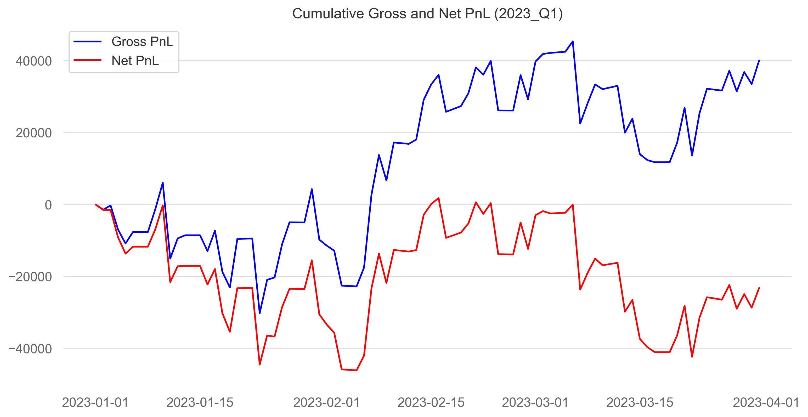
- Gross PnL trends upward over the quarter, finishing clearly positive.
- Net PnL trends downward almost monotonically, ending deeply negative.
- The gap between gross and net widens steadily.
- The mean-reversion signal itself works: price reversals are correctly identified.
- Very high turnover (confirmed by ~81 trades/day) completely erodes profitability.
Equity line for group 2 – 2023Q3
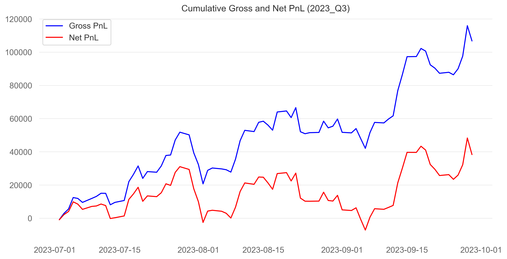
- Both gross and net PnL trend upward.
- Net PnL closely follows gross PnL with limited drawdowns.
- The gap between curves is stable, not expanding.
- Mean-reversion dynamics are persistent and clean.
- Price deviations revert smoothly, allowing trades to run longer.
- Transaction costs are absorbed by sufficiently large price moves.
- Temporary drawdowns (mid-quarter) are recovered quickly.
Equity line for group 2 – 2023Q4
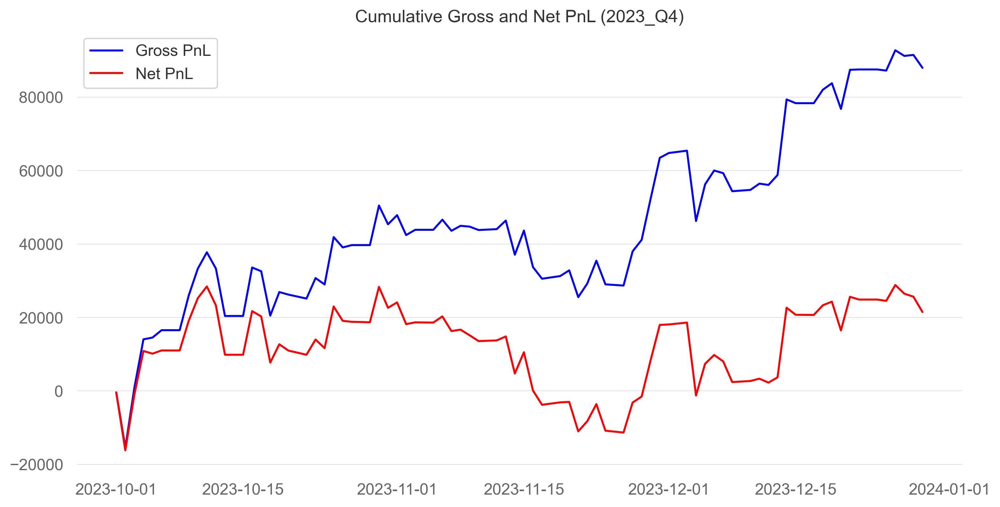
- Gross PnL increases steadily throughout the quarter.
- Net PnL is positive but exhibits larger drawdowns and plateaus.
- A visible mid-quarter net drawdown not mirrored in gross PnL.
- The signal remains strong, but market microstructure worsens: choppier price action partial reversals, increased stop-outs.
- Execution frictions matter more than in Q3.
- Recovery toward quarter end shows the strategy still adapts.
Equity line for group 1 – 2024Q2
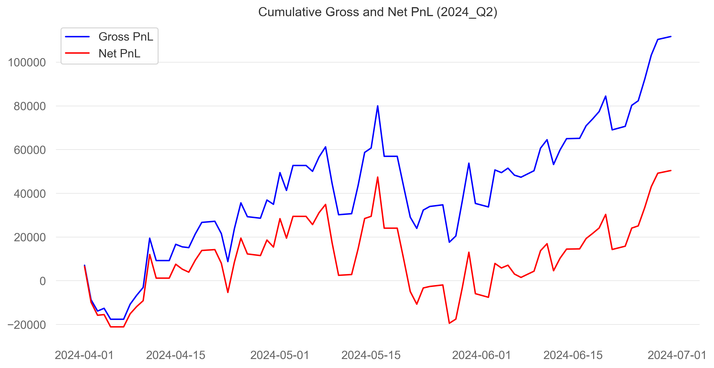
- Gross and net PnL both trend consistently higher.
- Early drawdown quickly reverses.
- Mean-reversion is very effective this quarter;price dislocations are large enough to trigger entries, and cleanly revert toward the mean.
- Net curve tracks the gross curve closely: signal quality is high, transaction costs are absorbed.
- Volatility is moderate, volatility scaling boosts returns without choking position size.
- Hard stops rarely trigger, therefore there are no long cooldown gaps. ## Equity line for group 2 – 2024Q4
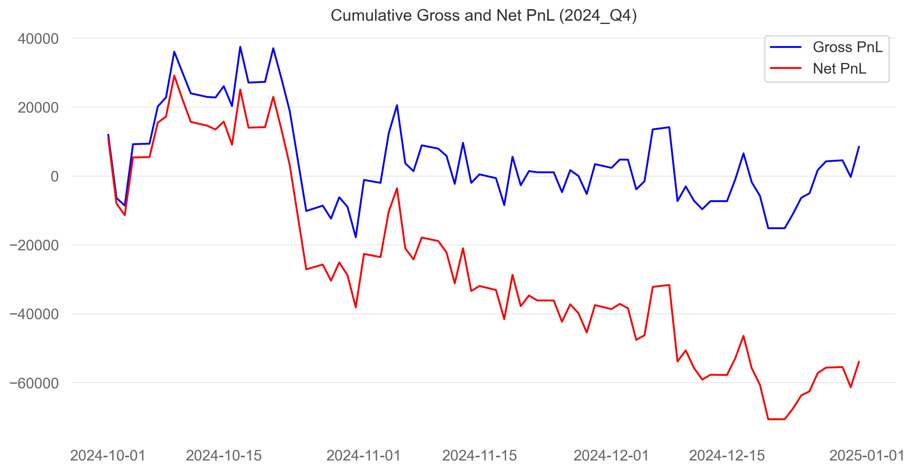
- gross PnL stagnates or mildly decays through mid-quarter.
- Persistent widening gap between gross and net PnL.
- This quarter shows a structural breakdown in mean-reversion, price moves start to drift away instead of coming back, entries are triggered, but reversions fail.
- The large and widening gap between gross and net means, that trade frequency likely remains high, but trade expectancy becomes negative.
- Increasing chop leads to more stop-outs, leading to cooldowns and lost opportunities.
- Trend filter likely offers limited relief because chop quickly whipsaws across the EMA.
Equity line for group 2 – 2025Q1
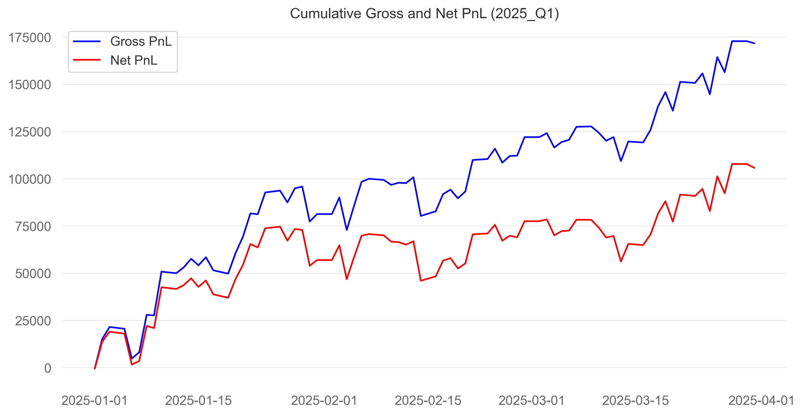
- Nearly monotonic climb in both gross and net PnL.
- Small drawdowns and quick recoveries.
- Deviations are frequent and large enough to justify entering.
- Reversions are swift, which leads trades realize their expected return.
- Trade size likely increases due to volatility scaling early in the quarter.
- Very few disruptive hard-stop events — model stays in sync with flow. ## Equity line for group 2 – 2025Q2
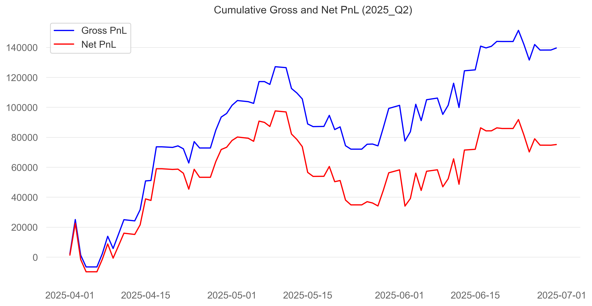
- Gross PnL trends strongly upward over the quarter, ending clearly positive.
- Net PnL also remains positive but lags gross PnL substantially.
- A pronounced mid-quarter drawdown affects both curves, indicating a temporary breakdown of mean-reversion.
- The widening gap between gross and net PnL highlights the impact of transaction costs and stop-induced turnover.
- Late-quarter recovery shows mean-reversion dynamics re-emerge and remain profitable.
- Overall, the signal remains robust, but execution frictions and choppy regimes reduce net efficiency relative to gross performance.
Summary and conclusions
The intraday mean-reversion strategy on Silver futures (XAG) produces positive net results in most of the analysed quarters, with profits mainly coming from short-term price moves that revert rather than from longer directional trends. The fact that performance changes from quarter to quarter does not appear to be driven by unstable parameters or an excessive number of trades, but instead by shifts in market conditions. In particular, periods with strong trends or very choppy price action tend to reduce the effectiveness of the strategy. Looking at gross versus net PnL highlights how important transaction costs and execution effects are in a high-frequency setting: even when the signal itself remains profitable, higher turnover and more frequent stop-outs can significantly reduce net returns. At the same time, the additional filters and risk controls play an important role in limiting drawdowns and preventing larger losses, even if this sometimes comes at the cost of lower profitability. Overall, the results show that relatively simple mean-reversion ideas can still work in intraday markets, but only when risk management and trading constraints are carefully integrated into the strategy design.